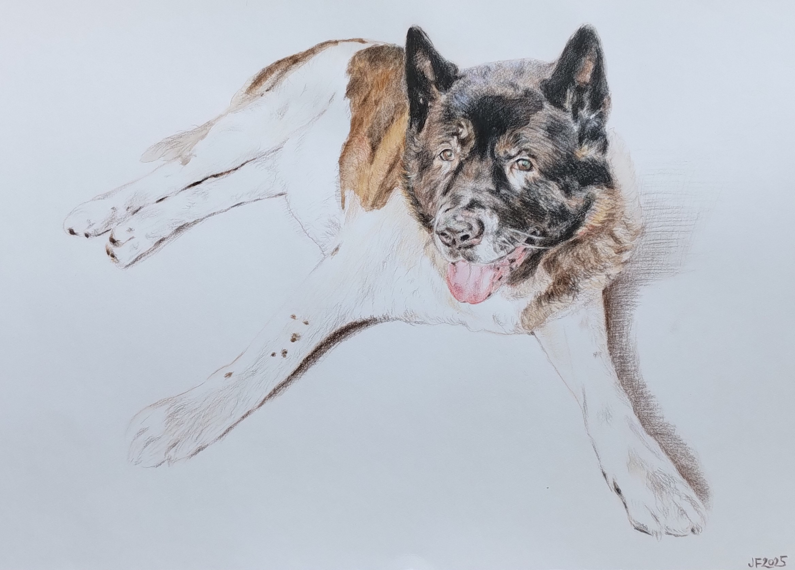
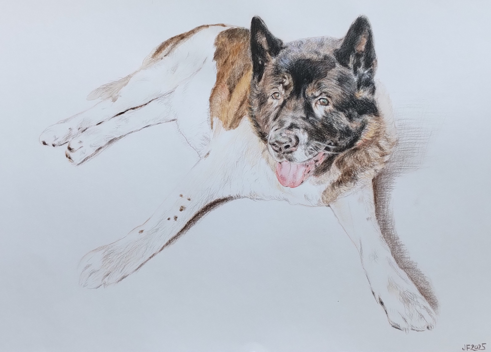
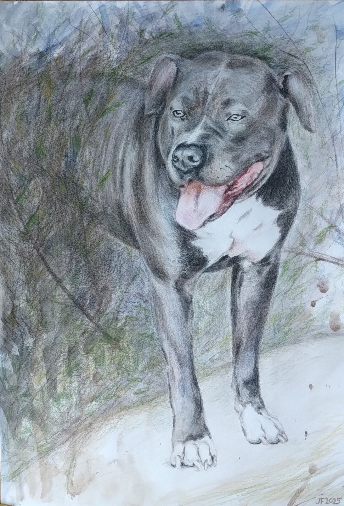
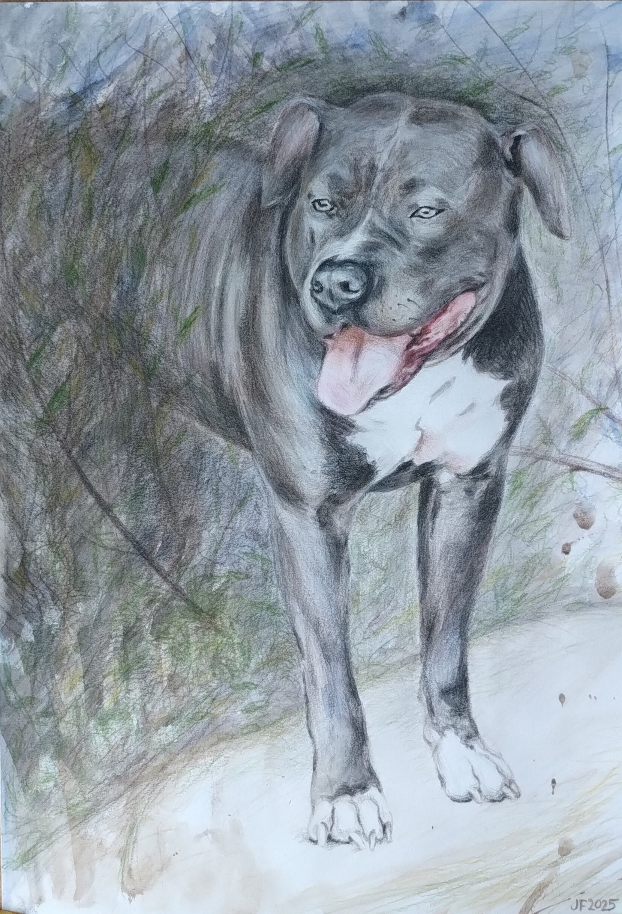

Portréty na zakázku mi umožňují zhmotnit vzpomínky na vaše děti, dospělé i věrné domácí mazlíčky, kteří hrají v rodinách nezastupitelnou úlohu a tedy i oni si zaslouží zvěčnit 😊.
Výtvarnou tvorbou se bavím od té doby, co jsem jako dítě vzala do ruky tužku. Fascinovaly mě obrazy v galeriích a ilustrace v knihách. Toužila jsem naučit se zachytit podobu lidí a jejich emoce, které se v obličeji promítají. Výtvarná činnost pro mě vždy byla důležitou seberozvojovou aktivitou a uvolněním. Dělalá mi radost vyjádřit svůj obdiv k jedinečným momentům každodenního života formou kresby a malby.
Základy kresby jsem získala během dospívání od ThDr. Jana Majera, který otevřel kroužek pro děti a individuálně se nám s nadšením věnoval. S dalším tvořením jsem pak pokračovala na ZUŠ Vlašim pod vedením Mgr. Jana Dvořáka, který mě zasvětil do širší škály výtvarných technik. Nejvíce jsem si oblíbila umělecké vyjádření pomocí barev. V letech 2019 a 2020 jsem absolvovala kurz olejomalby v ateliéru AvvY v Praze.
Kromě umělecké tvorby mě zajímá programování, takže jsem si s tímto uměleckým portfoliem vyhrála od úplných základů včetně zdrojového kódu.
Pro kresbu portrétů na zakázku používám umělecké akvarelové pastelky Koh-i-noor MONDELUZ. Předností těchto pastelek je světlostálost a čistota barev, takže se nemusíte obávat, že váš portrét časem vybledne. Kreslím vrstvenou technikou, čímž lze docílit optimální hloubky a kontrastu. Dávám si záležet na jemnosti provedení, a to zejména v případě kresby dětí.
Ve své nabídce mám také portréty malované akvarelovými barvami značky Rembrandt - artists quality. V porovnání s pastelkami lze těmito barvami dosáhnout výraznějšího kontrastu. Kromě přesného zobrazení detailů tato metoda navíc nabízí široký prostor pro abstraktní tvorbu.
Mojí srdcovou technikou je olejomalba barvami COBRA Artist H2Oil značky Royal Talens. Nejvíce si užívám malbu ve vrstvách (lavírovaná technika), což dodá obrazu požadovanou hloubku. Někdy si ale ráda hraji technikou alla prima.
 



 



• Dopřejte si nevšední retro zážitek – nechte se nakreslit – díky dnešním vymoženostem ani nemusíte sedět několik hodin modelem, postačí k tomu pouze pár fotek
• Pořiďte perfektní dárek pro vaše blízké – darujte radost, portrét od srdce 😊
• Zvěčněte pro Vás důležité momenty, abyste nikdy nezapomněli
Ručně kreslený portrét můžete nejprve nezávazně poptat a domluvíme následně detaily a dáme dohromady objednávku.
Určitě se bude hodit, když mi zašlete více fotek dané osoby nebo domácího mazlíčka, které chcete nechat portrétovat – fotografie „zepředu“ (en face) i z profilu, abych získala co nejlepší prostorovou představu a dokázala tak vytvořit portrét podle vašich představ. Důležité je, aby fotografovaný byl čelem ke zdroji světla, což zajistí vhodný kontrast.
Dále mi můžete sdělit povahové vlastnosti portrétovaného nebo výraz, který byste chtěli zachytit (např. šibalský úsměv vašeho Alíka, ztvárnění dětské naivity, roztomilosti a křehkosti vašich potomků, sexy výraz partnera/partnerky a pod.). Toto je hodně subjektivní, proto ocením co nejvíce podrobností. V průběhu kresby vám zašlu fotografii ke shlédnutí. Na základě vaší zpětné vazby můžeme následně upravit detaily tak, aby výsledné dílo plně odpovídalo vašim představám. Před odesláním obrázku vám zašlu i foto finální verze portrétu.
Domluvíme se na způsobu doručení (Zásilkovna, balíkovna, penguin box, česká pošta) a způsobu platby (převodem nebo dobírkou) podle vašich požadavků. V případě doručení prostřednictvím kurýrních služeb budu ráda, když mi zašlete podací kód (doručení tak pro vás bude zcela anonymní).
Ručně kreslený/malovaný portrét podle fotek, pastelky/akvarel na papíře A4
Domácí mazlíčci a jiná zvířata 700 Kč
Dospělí 1500 Kč
Děti 1800 Kč
Ručně kreslený/malovaný portrét podle fotek, pastelky/akvarel na papíře A3
Domácí mazlíčci a jiná zvířata 2000 Kč
Dospělí 2500 Kč
Děti 2800 Kč
V případě více lidí na jednom výkresu (max 3 osoby) + 250 Kč za další osobu/zvíře
Při objednávce více portrétů lze uplatnit množstevní slevu 10 %
Ceník portrétů olejomalbou
Cena se odvíjí od formátu a náročnosti motivu.
Orientačně od 4 000 Kč
Přesná cena je vždy stanovena individuálně po dohodě podle individuálních požadavků zákazníka (počet osob/zvířat, pozadí, formát, celková náročnost).
Nezávaznou poptávku mi můžete poslat e-mailem.

Užijte si focení se skvělou fotografkou Lucií
Nechte tento moment zvěčnit kresbou podle profesionálních fotek - kresba pastelkami umožňuje jemnými tahy a sytými barvami vyjádřit emoce a prožitky s osobním dotekem a hloubkou.
Portrétové focení s Lucií 850 - 2200 Kč (lze uplatnit slevu 500 Kč při objednávce kresby)
Navíc získejte slevu 500 Kč na portrét kreslený podle fotek od Lucie

Chcete svému pejskovi dopřát tu nejlepší péči a navíc získat slevu?
Pak neváhejte navštívit psí salon šikovné paní Terezy Bělinové ve Zruči nad Sázavou (v nabídce je stříhání, trimování, koupání a kosmetická úpravu psů).
K těmto službám obdržíte voucher se slevou 50% na ručně kreslený portrét - máte možnost zvěčnit sebe i svého pejska v plné kráse.
Objednejte si dárkové ručně kreslené portréty na míru!
Své dotazy a objednávky mi můžete zasílat prostřednictvím e-mailu:
portretyodsrdce@atlas.cz
IČO: 21862761
1. Úvodní ustanovení
Tyto obchodní podmínky upravují vztah mezi zhotovitelem (autorkou portrétů) a zákazníkem při objednávce ručně malovaných či kreslených portrétů na zakázku.
Zhotovitelem je: Mgr. Julie Fabišiková, Ph.D.
e-mail: portretyodsrdce@atlas.cz
(dále jen „zhotovitel“)
2. Objednávka a komunikace
Zakázku lze sjednat prostřednictvím e-mailu, telefonu, WhatsAppu nebo Messengeru.
Objednávka se stává závaznou po vzájemném potvrzení podoby díla, formátu a ceny.
3. Cena a platba
Cena je stanovena podle aktuálního ceníku nebo po dohodě s klientem individuálně podle rozsahu a techniky díla.
Platbu lze provést: převodem na účet (na základě vystavené faktury), nebo v hotovosti při osobním převzetí díla.
Faktura je zasílána elektronicky.
4. Doba zhotovení a předání díla
Vzhledem k individuální povaze tvorby není stanoven pevný termín dokončení. Odhad doby zhotovení je sdělen informativně při objednávce.
Hotové dílo lze převzít osobně nebo zaslat poštou (poštovné dle aktuálního tarifu České pošty nebo Zásilkovny).
Zhotovitel nenese odpovědnost za poškození vzniklé přepravou, pokud se zákazník nerozhodne pro pojištěné zaslání.
5. Autorská práva
Všechna díla jsou chráněna autorským zákonem.
Kupující získává vlastnické právo k originálu, nikoli právo dílo dále rozmnožovat nebo používat ke komerčním účelům bez písemného souhlasu autorky.
Autorka si vyhrazuje právo použít reprodukci díla (např. fotografii portrétu) k prezentaci své tvorby na webu a sociálních sítích, pokud se se zákazníkem nedohodne jinak.
6. Odstoupení od smlouvy
Protože se jedná o tvorbu na zakázku dle přání zákazníka, nelze po zahájení práce od smlouvy odstoupit.
Před zahájením práce je možné objednávku bez sankce zrušit.
7. Ochrana osobních údajů
Zhotovitel zpracovává osobní údaje zákazníků pouze v rozsahu nezbytném pro vyřízení objednávky – viz Zásady ochrany osobních údajů (GDPR) níže.
Zásady ochrany osobních údajů (GDPR)
1. Správce údajů
Správcem osobních údajů je Mgr. Julie Fabišiková, Ph.D., kontaktní e-mail: portretyodsrdce@atlas.cz.
2. Jaké údaje zpracovávám
jméno a příjmení
e-mailová adresa, telefonní číslo
doručovací adresa (pokud je třeba odeslat hotové dílo)
údaje uvedené na faktuře
3. Účel zpracování
Osobní údaje jsou zpracovávány výhradně pro:
vyřízení objednávky a komunikaci se zákazníkem,
vystavení a evidenci faktur,
zaslání hotového díla.
4. Doba uchování údajů
Údaje jsou uchovávány po dobu stanovenou účetními předpisy (obvykle 5 let) a poté bezpečně smazány.
5. Předávání údajů
Údaje nejsou předávány třetím osobám, kromě případů vyžadovaných zákonem (např. účetnictví, přepravní služby).
6. Práva zákazníků
Zákazník má právo:
požadovat přístup ke svým údajům,
požádat o opravu nebo výmaz,
omezit zpracování,
podat stížnost u Úřadu pro ochranu osobních údajů.
© Copyright 2024 Julie Fabišiková. Všechna práva vyhrazena.